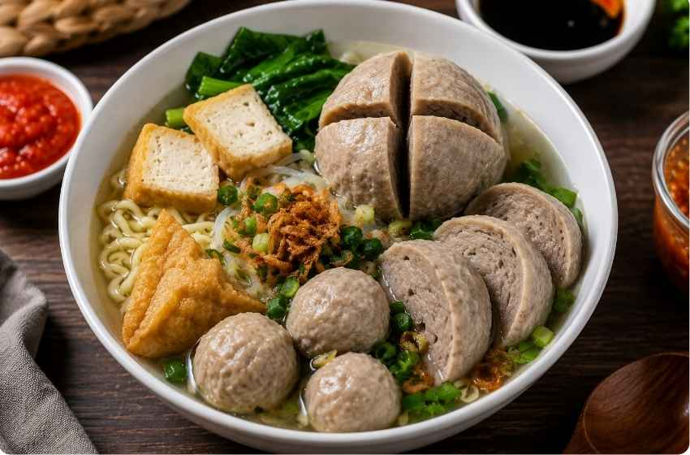

BARU?Bakso Sapi
Bakso adalah hidangan khas berupa bola-bola daging yang terbuat dari campuran daging sapi giling dan tepung tapioka.
Bahan-bahan: Siapkan 500 gram daging sapi, 50 gram tepung tapioka, 1 butir putih telur, 100 gram es batu, 4 siung bawang putih, 2 sendok makan bawang merah goreng, serta 1 sendok teh garam, lada, kaldu bubuk, dan baking powder.
Langkah 1: Siapkan Air Panas Rebus air di dalam panci sampai mendidih, lalu kecilkan api sekecil mungkin atau matikan kompor sementara agar air tenang dan tidak bergolak saat adonan dimasukkan.
Langkah 2: Cetak Adonan Ambil segenggam adonan daging yang sudah dingin dengan tangan kiri, lalu remas dan tekan adonan tersebut hingga keluar membulat di antara jari jempol dan jari telunjuk Anda.
Langkah 3: Masukkan ke Panci Ambil bulatan daging tersebut menggunakan sendok makan yang sudah dibasahi air agar tidak lengket, lalu langsung masukkan ke dalam panci berisi air panas tadi sampai adonan habis.
Langkah 4: Rebus hingga Mengapung Nyalakan kembali kompor dengan api sedang, lalu rebus semua bakso secara perlahan sampai ukurannya sedikit membesar dan mengapung seluruhnya ke permukaan air.
Langkah 5: Matangkan Bagian Dalam Setelah bakso mengapung, biarkan tetap direbus selama 2 sampai 3 menit tambahan untuk memastikan hawa panas meresap dan bagian dalam daging benar-benar matang sempurna.
Langkah 6: Rendam Air Es Angkat bakso yang sudah matang menggunakan serokan, lalu langsung cemplungkan ke dalam wadah berisi air es selama 2 menit untuk menghentikan proses memasak sekaligus mengunci teksturnya agar kenyal.